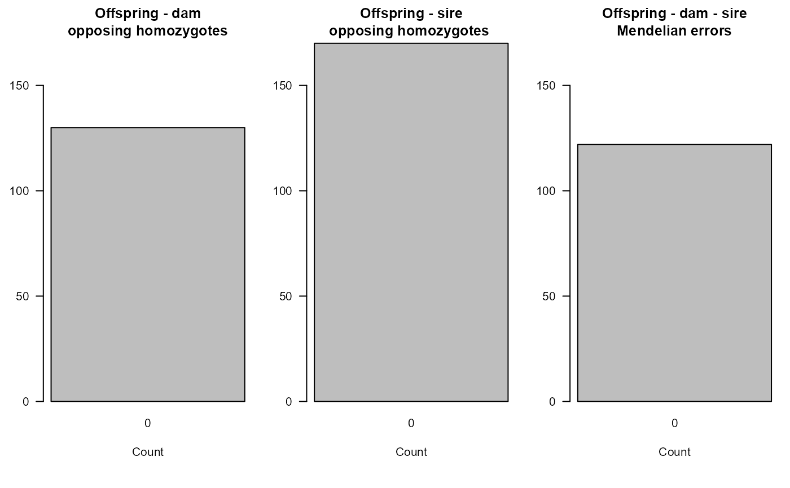
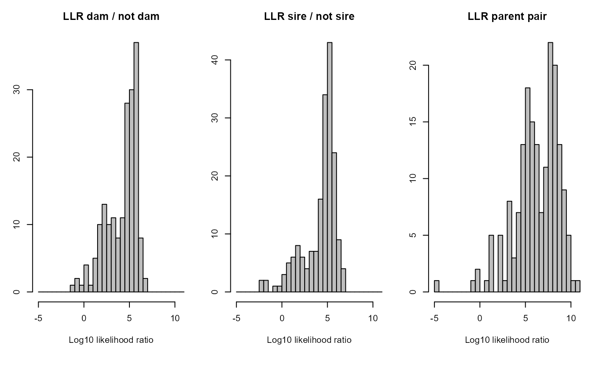

Calculate OH and LLR for a pedigree
CalcOHLLR.RdCount opposite homozygous (OH) loci between parent-offspring pairs and Mendelian errors (ME) between parent-parent-offspring trios, and calculate the parental log-likelihood ratios (LLR).
Usage
CalcOHLLR(
Pedigree = NULL,
GenoM = NULL,
CalcLLR = TRUE,
LifeHistData = NULL,
AgePrior = FALSE,
SeqList = NULL,
Err = 1e-04,
ErrFlavour = "version2.0",
Tassign = 0.5,
Tfilter = -2,
Complex = "full",
Herm = "no",
quiet = FALSE
)Arguments
- Pedigree
dataframe with columns id-dam-sire. May include non-genotyped individuals, which will be treated as dummy individuals. If provided, any pedigree in
SeqListis ignored.- GenoM
numeric matrix with genotype data: One row per individual, and one column per SNP, coded as 0, 1, 2 or -9 (missing). See also
GenoConvert.- CalcLLR
calculate log-likelihood ratios for all assigned parents (genotyped + dummy/non-genotyped; parent vs. otherwise related). If
FALSE, only number of mismatching SNPs are counted (OH & ME), and parametersLifeHistData,AgePrior,Err,Tassign, andComplexare ignored. Note also that calculating likelihood ratios is much more time consuming than counting OH & ME.- LifeHistData
data.frame with up to 6 columns:
- ID
max. 30 characters long
- Sex
1 = female, 2 = male, 3 = unknown, 4 = hermaphrodite, other numbers or NA = unknown
- BirthYear
birth or hatching year, integer, with missing values as NA or any negative number.
- BY.min
minimum birth year, only used if BirthYear is missing
- BY.max
maximum birth year, only used if BirthYear is missing
- Year.last
Last year in which individual could have had offspring. Can e.g. in mammals be the year before death for females, and year after death for males.
"Birth year" may be in any arbitrary discrete time unit relevant to the species (day, month, decade), as long as parents are never born in the same time unit as their offspring, and only integers are used. Individuals do not need to be in the same order as in `GenoM', nor do all genotyped individuals need to be included.
- AgePrior
logical (
TRUE/FALSE) whether to estimate the ageprior fromPedigreeandLifeHistData, or a matrix as generated byMakeAgePriorand included in thesequoiaoutput. TheAgePrioraffects which relationships are considered possible: only those where \(P(A|R) / P(A) > 0\). WhenTRUE,MakeAgePrioris called using its default values. WhenFALSE, all relationships are considered possible for all age differences, except that parent-offspring pairs cannot have age difference zero, and grand-parental pairs have an age difference of at least two.- SeqList
list with output from
sequoia. If input parameterPedigree=NULL,SeqList$Pedigreewill be used if present, andSeqList$PedigreeParotherwise. IfSeqList$Specsis present, input parameters with the same name as its items are ignored, except 'CalcLLR' and 'AgePriors=FALSE'. The list elements `LifeHist', `AgePriors', and `ErrM' are also used if present, and override the corresponding input parameters.- Err
estimated genotyping error rate, as a single number, length 3 vector or 3x3 matrix; see details below. The error rate is presumed constant across SNPs, and missingness is presumed random with respect to actual genotype. Using
Err>5% is not recommended.- ErrFlavour
DEPRECATED, (use length 3 vector for
Errinstead) function that takesErr(single number) as input, and returns a 3x3 matrix of observed (columns) conditional on actual (rows) genotypes, or choose from inbuilt options 'version2.0', 'version1.3', or 'version1.1', referring to the sequoia version in which they were the default. Ignored ifErris a matrix. SeeErrToM.- Tassign
minimum LLR required for acceptance of proposed relationship, relative to next most likely relationship. Higher values result in more conservative assignments. Must be zero or positive.
- Tfilter
threshold log10-likelihood ratio (LLR) between a proposed relationship versus unrelated, to select candidate relatives. Typically a negative value, related to the fact that unconditional likelihoods are calculated during the filtering steps. More negative values may decrease non-assignment, but will increase computational time.
- Complex
Breeding system complexity. Either "full" (default), "simp" (simplified, no explicit consideration of inbred relationships), "mono" (monogamous).
- Herm
Hermaphrodites, either "no", "A" (distinguish between dam and sire role, default if at least 1 individual with sex=4), or "B" (no distinction between dam and sire role). Both of the latter deal with selfing.
- quiet
logical, suppress messages
Value
The Pedigree dataframe with additional columns:
- LLRdam
Log10-Likelihood Ratio (LLR) of this female being the mother, versus the next most likely relationship between the focal individual and this female (see Details for relationships considered)
- LLRsire
idem, for male parent
- LLRpair
LLR for the parental pair, versus the next most likely configuration between the three individuals (with one or neither parent assigned)
- OHdam
Number of loci at which the offspring and mother are opposite homozygotes
- OHsire
idem, for father
- MEpair
Number of Mendelian errors between the offspring and the parent pair, includes OH as well as e.g. parents being opposing homozygotes, but the offspring not being a heterozygote. The offspring being OH with both parents is counted as 2 errors.
- SNPd.id
Number of SNPs scored (non-missing) for the focal individual
- SNPd.id.dam
Number of SNPs scored (non-missing) for both individual and dam
- SNPd.id.sire
Number of SNPs scored for both individual and sire
- Sexx
Sex in LifeHistData, or inferred Sex when assigned as part of parent-pair
- BY.est
mode of birth year probability distribution
- BY.lo
lower limit of 95% highest density region of birth year probability distribution
- BY.hi
higher limit
The columns 'LLRdam', 'LLRsire' and 'LLRpair' are only included when
CalcLLR=TRUE. When a parent or parent-pair is incompatible with the
lifehistory data or presumed genotyping error rate, the error value '777' may
be given.
The columns 'Sexx', 'BY.est', 'BY.lo' and 'BY.hi' are only included when
LifeHistData is provided, and at least one genotyped individual has an
unknown birth year or unknown sex.
Details
Any individual in Pedigree that does not occur in
GenoM is substituted by a dummy individual; these can be recognised
by the value 0' in columns 'SNPd.id.dam' and `SNPd.id.sire` in the output.
For non-genotyped individuals the parental log-likelihood ratio can be
calculated if they have at least one genotyped offspring (see also
getAssignCat).
The birth years in LifeHistData and the AgePrior are not used
in the calculation and do not affect the value of the likelihoods for the
various relationships, but they _are_ used during some filtering steps, and
may therefore affect the likelihood _ratio_. The default
(AgePrior=FALSE) assumes all age-relationship combinations are
possible, which may mean that some additional alternatives are considered
compared to the sequoia default, resulting in somewhat lower
LLR values.
A negative LLR for A's parent B indicates either that B is not truely the parent of A, or that B's parents are incorrect. The latter may cause B's presumed true, unobserved genotype to divert from its observed genotype, with downstream consequences for its offspring. In rare cases it may also be due to 'weird', non-implemented double or triple relationships between A and B.
See also
SummarySeq for visualisation of OH & LLR
distributions; CalcPairLL for the likelihoods underlying the
LLR, GenoConvert to read in various genotype data formats,
CheckGeno; PedPolish to check and 'polish' the
pedigree; getAssignCat to find which id-parent pairs are both
genotyped or can be substituted by dummy individuals; sequoia
for pedigree reconstruction.
Examples
# count Mendelian errors in an existing pedigree
Ped.OH <- CalcOHLLR(Pedigree = Ped_HSg5, GenoM = SimGeno_example,
CalcLLR = FALSE)
#> Counting Mendelian errors ...
Ped.OH[50:55,]
#> id dam sire OHdam OHsire MEpair SNPd.id SNPd.id.dam SNPd.id.sire
#> 50 a01010 a00008 b00016 0 0 1 200 199 198
#> 51 b01011 a00008 b00016 0 0 1 200 199 198
#> 52 b01012 a00008 b00016 0 0 1 198 197 196
#> 53 b01013 a00011 b00001 0 0 0 199 199 199
#> 54 b01014 a00011 b00001 0 0 0 198 198 198
#> 55 b01015 a00011 b00001 0 0 1 198 198 198
# view histograms
SummarySeq(Ped.OH, Panels="OH")

# Parent likelihood ratios in an existing pedigree, including for
# non-genotyped parents
Ped.LLR <- CalcOHLLR(Pedigree = Ped_HSg5, GenoM = SimGeno_example,
CalcLLR = TRUE, LifeHistData=LH_HSg5, AgePrior=TRUE)
#> Ageprior: Flat 0/1, discrete generations, MaxAgeParent = 1,1
#> Counting Mendelian errors ...
#> Counting opposing homozygous loci between all individuals ...
#> Calculating parental LLR ...
SummarySeq(Ped.LLR, Panels="LLR")

if (FALSE) {
# likelihood ratios change with presumed genotyping error rate:
Ped.LLR.B <- CalcOHLLR(Pedigree = Ped_HSg5, GenoM = SimGeno_example,
CalcLLR = TRUE, LifeHistData=LH_HSg5, AgePrior=TRUE,
Err = 0.005)
SummarySeq(Ped.LLR.B, Panels="LLR")
# run sequoia with CalcLLR=FALSE, and add OH + LLR later:
SeqOUT <- sequoia(Geno_griffin, LH_griffin, CalcLLR=FALSE,quiet=TRUE,Plot=FALSE)
PedA <- CalcOHLLR(Pedigree = SeqOUT[["Pedigree"]][, 1:3], GenoM = Genotypes,
LifeHistData = LH_griffin, AgePrior = TRUE, Complex = "full")
SummarySeq(PedA, Panels=c("LLR", "OH"))
}